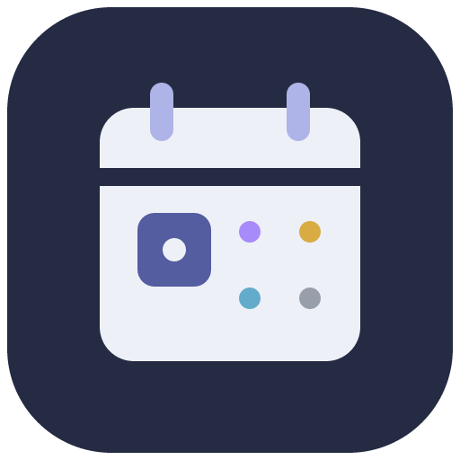
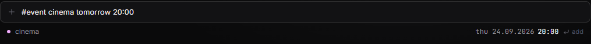

Releases move. Stay in the loop.
Look up games, films, and shows. Refresh linked release dates and see what changed. Pin your own date when your plan matters more than release day.

slate Get SlateA personal calendar for Windows
The next game. Friday’s film. A plan worth keeping. Bring it all together in a quiet calendar that lives on your computer.
Windows 10/11 · x64 · No account needed for core features
No form to wrestle with. Type a title and a date, check the preview, and press Enter. No date yet? Your idea waits in the backlog.
English and everyday words like sutra and petak work too.
Try an example
#event cinema tomorrow 20:00↵An interactive explanation of quick add. Add your own plans in the Windows app.

Look up games, films, and shows. Refresh linked release dates and see what changed. Pin your own date when your plan matters more than release day.
A morning list and reminders before timed plans. Slate stays in the Windows tray when you close the window, ready for the next thing.
Mark it done, leave a rating, write a small verdict. Your calendar becomes a record of what you actually made time for.
Your working calendar stays on your computer, with automatic local backups and JSON export. Manual planning works offline.
Understand your data and backupsNo Slate account. No hosted calendar service to depend on.
Optional release metadata and artwork use external providers. Connect Google Calendar on Windows for one-way Slate → Google sync.
Export your entries and day notes as JSON. Preview changes before importing. Keep a separate backup for a new computer.
Download the Windows installer from GitHub Releases. Install Slate and open it from your Start menu.
Type #event cinema tomorrow 20:00. Check the preview, then press Enter.
Click a day to add a note. Press Ctrl + K for preferences, search, backups, and more.
No account or keys are needed for manual entries, notes, the backlog, ratings, or local backups. Optional TMDB and IGDB credentials add release lookup. Steam game search can work without a key. You configure these in Preferences.
Yes, on Windows, with your own Desktop OAuth client. It is one-way sync from Slate to your chosen calendar. Dated titles, entry notes, links, kind, and done status are copied; journal notes, ratings, verdicts, and the backlog stay local. Follow the connection guide.
Closing the window leaves Slate running in the Windows tray. Reminders and sync can continue there. Choosing Quit from the tray stops them. Windows notification settings and sleep can also affect reminders.
This first release is unsigned. Download only from this project's GitHub Releases page and compare the supplied SHA-256 checksum if needed. The installer supports Windows 10/11 on x64 computers.
This is the product website. Install the Windows app for daily use, or run the source locally for browser development. There is no hosted calendar or mobile app here.
Yes, the source and build instructions are on GitHub. It uses React, TypeScript, and Tauri. No open-source license has been granted for redistribution or reuse of Slate's own source. Read the developer guide.
Give it a place on your slate.